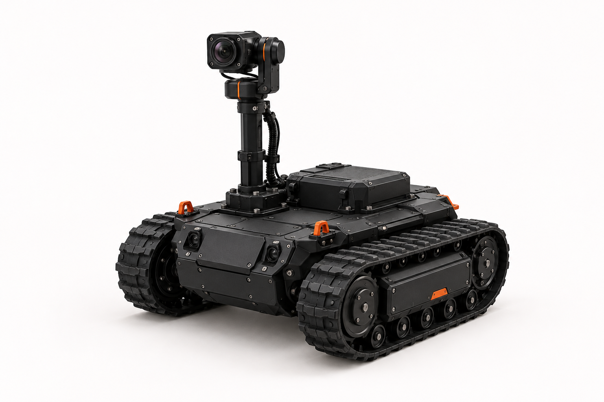

RoboticsEmbedded SystemsDistributed ControlFault ToleranceReal-Time SystemsEmbedded NetworkingResilient Systems
A distributed embedded-control system designed to detect and diagnose failures, reassign critical responsibilities, and recover safely. A tracked robotic rover will serve as its initial test platform.
The Concept

AI-generated concept illustration of the robotic platform envisioned for Project Ananta. Final design may differ.
The Idea
Even the most reliable systems can experience failures. Ananta explores how multiple embedded controllers can work together, monitor each other, and take over critical tasks when something goes wrong.
The idea is to build and test these mechanisms on a tracked robotic platform, while exploring how the same approach could be applied to systems beyond robotics.
The initial version (v0.1) of Ananta is planned around four embedded controllers connected over a CAN network.
Two controllers handle motion control, with one acting as a backup. The other two handle motor actuation, allowing either to take over if its counterpart fails. Additional hardware supports system monitoring, diagnostics, and safe control handover.
The tracked rover will also feature a remotely controlled camera for live viewing and observing its surroundings, operating independently of the core control system.
The architecture is being designed to support fault recovery without depending on a single controller for every critical function.
Experiments
Ananta will be tested through controlled fault injection to study how the system detects failures, diagnoses their causes, and recovers.
A Raspberry Pi Pico will serve as an independent fault-injection controller, allowing us to deliberately introduce failures such as controller power loss, firmware hangs, and communication interruptions.
The experiments will focus on measuring:
Failure-detection and recovery latency
Successful recovery across repeated tests
Accuracy of fault diagnosis
Control interruption and degraded operation
Communication and computational overhead
The results, including failures and limitations, will be documented as development progresses.
Development Status
Project Ananta is currently in the planning and design stage, with the initial direction for v0.1 taking shape.
I’ll be documenting the development process, progress, challenges, and findings through articles and build logs on my personal blog.